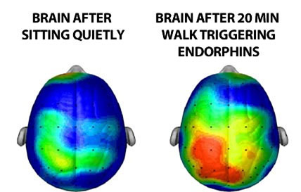

Hacking Your Work Life __ Balance to Take Over the World
Jennifer Wadella
Jennifer Wadella
@likeOMGitsFEDAY
- 9-5 Software Engineer
- Nonprofit Founder/Director
- International Speaker
- Mentor
This talk may contain strong language, harsh truths, and serious passion.


Work
Your trade - but mostly how you collect a paycheck.

Life
Everything you do when you're not at work.

"Blank"
Your passion.
Your Work
- Job Execution
- Skill Upgrading
- Managing Others
- Meetings, responding to emails, training, paperwork
Your Life
- Household Management
- Financial Planning
- Family
- Health
- Sleep
- Social Life
- Hobbies
- Relaxation
Your Blank
- Volunteering?
- Blogging?
- Public Speaking?
- Side Hustle?
- Managing a non-profit?
- Competitve sport?
- Open Source project/contribution?
My work-life-blank plotted
Strategies
- Prioritizing
- Automating
- Balancing
- Finding Tools & Processes
- Recompensating
Strategy #1: Prioritize
Dwight D. Eisenhower
"I have two kinds of problems: the urgent and the important. The urgent are not important, and the important are never urgent."
| Urgent | Not Urgent | |
|
Not Important
|
Quadrant of Necessity
|
Quadrant of Quality &
|
|
Not Important
|
Quadrant of Deception
|
Quadrant of Waste
|
Eat the Frog First

“Eat a live frog first thing in the morning and nothing worse will happen to you the rest of the day.” - Mark Twain
What About Creative Workflow?

Have a way to document creative thoughts as a placeholder
Unforseen Chaos
Murphy's Law

What can go wrong WILL go wrong
home catastrophe
Strategy #2: Automate
Like devops IRL
Autopay
Eliminate the need to remember dates for bills.
Autocommunicate
- Create canned responses - tutorial for Gmail
- Proof your work with Grammarly - Chrome/Safari extension
- Set reminders for on Slack notifications
- Create todos for yourself/team in Slack
- For everything else - IFTTT, Emailpet, & Zapier
Automarket Yoself
- Use social media tools to manage your content
- Set up Google Alerts for your name/company
Autodomesticate
- Look into cleaning services
- Outsource lawncare projects
- Clean as you go
- Try a meal prep service - Blue Apron, Hello Fresh, Marley Spoon
- Get the monotonous items (toilet paper, paper towels, garbage bags, dog food, cat litter) regularly shipped to you.
life effort before/after automating
life effort before/after automating
Spend your time and energy on implemeting ideas & solving the big problems.
tl;dr - Find redundancies in your life and find ways to minimize them
Strategy #3: Find Balance
Get Enough Sleep
- Recovery - this is when your immune system releases compounds called cytokine
- Aids in Hunger Management
- Memory - REM & slow wave sleep of sleep contribute to creative thinking, procedural memory, long-term memories, and memory processing
How to Get Enough Sleep
- Use a fitness tracker to monitor your sleep
- Avoid stimulants and lights before bed.
- For help falling asleep try audiobooks, apps, music, or white noise creators.

Know Your Productive Hours
The number of hours in a day isn't the issue ... it's how many of those hours you feel productive during.
Prioritize Your Health
How you treat your body matters!
"There's good epidemiological data to suggest that active people are less depressed than inactive people. And people who were active and stopped tend to be more depressed than those who maintain or initiate an exercise program,"
- James Blumenthal, PhD, clinical psychologist at Duke University.
Learn to Say "No"

Remove Toxic Relationships

Do not set yourself on fire to keep someone else warm. - a super wise person
Turn Off Push Notifications.

Get the f*ck off Social Media.

Give Yourself A Break
True self-care is not salt baths and chocolate cake, it is making the choice to build a life you don’t need to regularly escape from.
Identify & Minimize Stressors

Strategy #5: Use Tools & Processes
Hacking your work life __ balance IS a process.
Trello for everything.
Just kidding. Kind of.
But find a tool that works for you.
Calendar Hacks
- If it exists, block it on your calendar.
- Physically block out work hours for yourself.
- Share calendars between family members
- Use reminders & todos
- Block off weeks around travel.
- Calendly
Get an Accountability Buddy
Friend with shared __ interests? Great!

If not, create your own accountability buddy in Slack - IFTTT recipe
Email Hacks
Jennifer's Email Hacks
- Want a response? Always conclude with a CTA and deadline
- Format your dates to be easy to remember - Day of week, date, time + timezone
- Make your emails easy to read - use lists, call out important info, line breaks are your friend.
Meal Prep
- Save time
- Remove decision making need/willpower
- Save money
- Easy portion control
- Better nutrition
- Easy calorie tracking
https://www.nerdfitness.com/blog/why-you-should-be-planning-your-meals/
Jennifer's Mealprep hacks

Jennifer's Mealprep hacks
- Join the Cult of the Instant Pot
- Calculate your Macros
- Dump recipes in MyFitnessPal for easy calorie tracking
- Freeze meals for when you know you won't have time to mealprep. (I make EFBs)
- Subscribe to r/MealPrepSunday
Errand Hacks
- Avoid busy times
- Run errands when parents will be picking up their kids from school - my mom
- Use order ahead/pickup services when available
Train your brain to go into
focus mode
- Use music - The New Playlist For More Productive Work: Video Game Soundtracks
- Remove distractions - Stay Focusd & Momentum
- Physcially write down the things distracting you
- Clear your office & your desktop
Strategy #6: Recompensate
rec·om·pen·sate
to pay or give compensation for; make restitution or requital for (damage, injury, or the like).
Get yoself a hobby

Have Guilty Pleasures

and don't feel guilty.
Plan Things You Look Forward To

Take Your Birthday OFF
🎂 🎂 🎂

Make plans to take over the world

Recap: Strategies
- Prioritizing
- Automating
- Balancing
- Finding Tools
- Recompensating
Questions?

Slides available at: tehfedaykin.github.io/HackingYourWorkLife__Balance